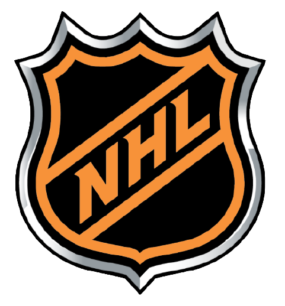
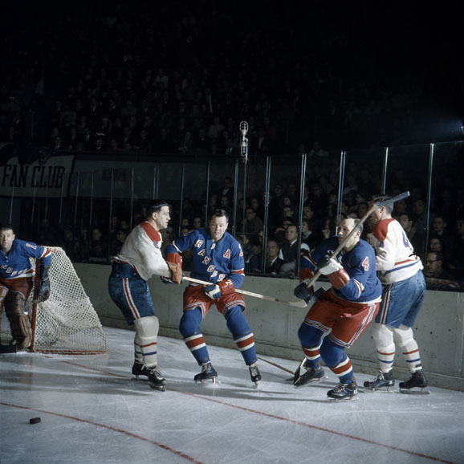
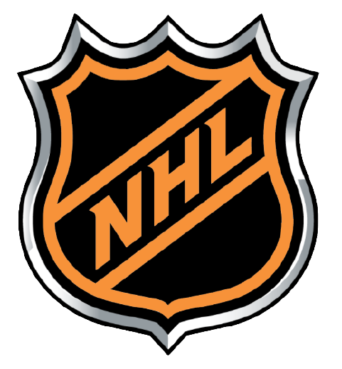
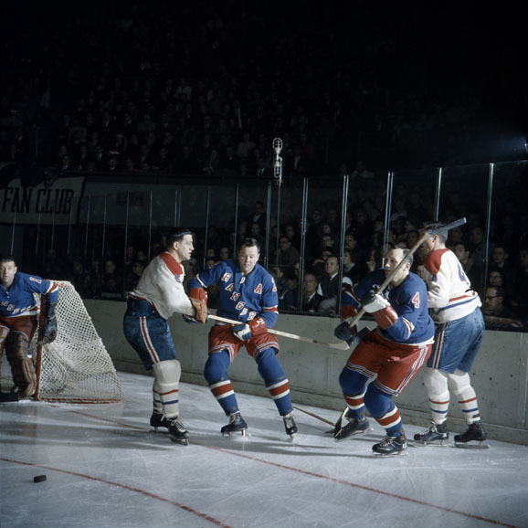

L'histoire des Canadiens de Montréal est surement la plus intéressante et remplie parmi toutes les équipes de la NHL incluant les 6 équipes originales.
Les Canadiens sont l'équipe avec le plus de coupe Stanley avec 24 coupes. De plus, elle à hébergé parmi les plus grands talents du sport telle que Maurice Richard, Guy Lafleur, Jean Béliveau et plein d'autres.
La franchise à été créé en 1909 et jouait initialement dans la "Canadian Hockey Association". La première coupe Stanly des Canadiens fut gagnée en 1916, le célèbre gardien Georges Vezina, qui à donné nom au trophée remis à chaque année au meilleur gardien, faisait parti de cette équipe.
En 1917, la célèbre Ligne National de Hochey fut créé.

De 1917 à 1942, plusieurs équipes se succèdent, les canadiens restant toujours une équipe forte de la LNH ont gagné plusieurs coupe Stanley dans ces années. En 1942, il n'y a que 6 équipe, ces équipes souvent désigner à tort les 6 équipes originales. Entre 1940 et 1970, Maurice Richard émerge comme l'un des meilleurs joueurs aux monde. En 1945, il accompli l'exploit de marquer 50 buts en 50 match et est le premier à atteindre les 500 buts. Pendant ces trentes années, souvent appelé les trentes glorieuses, les canadien s'impose comme une équipe dominante et remporte plusieurs coupes. Les années 70 furent très chargées pour la LNH et pour les Canadiens de MTL. La LNH entreprend une grande expansion et pleins de nouvelles équipes rejoignent la ligue. Les Canadiens ont pendant ces années une réelle dynastye ou il gagne 6 coupe en 10 ans dont 4 de suite. Pour plus de renseignement sur l'histoire des canadiens, Veuiller cliquer içi.

La dernière coupe Stanley des Canadiens fut remporté en 1993 contre les Kings et Wayne Gretzky. Depuis 1993, ont est nul, lol.

De 1917 à 1942, plusieurs équipes se succèdent, les canadiens restant toujours une équipe forte de la LNH ont gagné plusieurs coupe Stanley dans ces années. En 1942, il n'y a que 6 équipe, ces équipes souvent désigner à tort les 6 équipes originales. Entre 1940 et 1970, Maurice Richard émerge comme l'un des meilleurs joueurs aux monde. En 1945, il accompli l'exploit de marquer 50 buts en 50 match et est le premier à atteindre les 500 buts. Pendant ces trentes années, souvent appelé les trentes glorieuses, les canadien s'impose comme une équipe dominante et remporte plusieurs coupes. Les années 70 furent très chargées pour la LNH et pour les Canadiens de MTL. La LNH entreprend une grande expansion et pleins de nouvelles équipes rejoignent la ligue. Les Canadiens ont pendant ces années une réelle dynastye ou il gagne 6 coupe en 10 ans dont 4 de suite. Pour plus de renseignement sur l'histoire des canadiens, Veuiller cliquer içi.

La dernière coupe Stanley des Canadiens fut remporté en 1993 contre les Kings et Wayne Gretzky. Depuis 1993, ont est nul, lol.